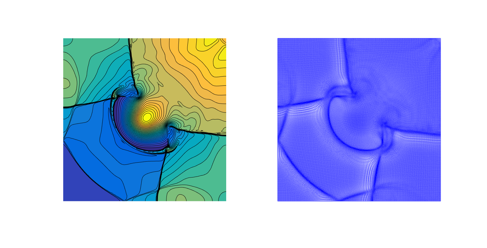
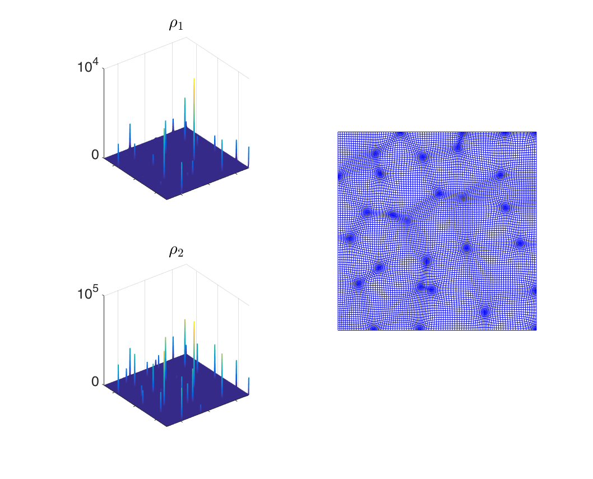
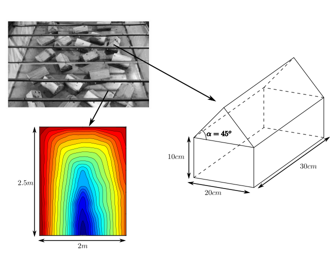
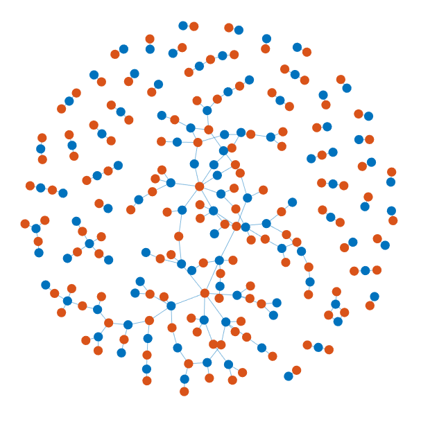

Tong Wu
I have been working on developing continuous data assimilation algorithms. In particular, by extending the existing Azouani-Olsan-Titi (AOT) algorithm by introducing dynamic feedback control, we can control the convergence rate, which can help us to estimate the amount of data we need in time to successfully recover the initial conditions for a numerical forecast model.

Two dimensional shallow water model: The following figure shows solution profile during time period from 0 to 3. The approximating solutions(lower row; h: water depth; p: momentum in x-direction) start from constant and recover most part of reference solutions (uper row) using the observed data (red dots) as t increases, including the shocks and even some small scale details.
One major difficulty in developing numerical methods for hyperbolic system is that the hyperbolic system admits non-smooth solutions. To achieve high resolution as well as to improve the efficiency of the numerical methods, we have developed new AMM central-upwind schemes for the hyperbolic system.

Two dimensional shallow water model: We presented adaptive moving mesh central-upwind schemes for Saint-Venant system of shallow water, which is well-balanced and positivity preserving. As one can see in the right figure, the discontinuities in the solution are clearly captured by the moving mesh.

Two-species chemotaxis system: We also presented a 2-D
adaptive moving mesh upwind scheme for the two-species
Patlak-Keller-Segel type chemotaxis system, in which the
two species do not compete, but have different
chemotactic sensitivity, which may lead to a
significantly different density growth rate. As one can
see in the left figure, the solution develops
complicated multi-spiky structures, which are captured
by the our AMM upwind scheme with a high resolution.
Shallow water models are widely used as a mathematical framework to study water flows in rivers and coastal areas as well as to investigate a variety of phenomena in atmospheric sciences and oceanography. Solving the shallow water equations numerically is a challenging task due to several reasons, such as preservation of physically relevant steady state solutions and the positivity preservation of water depth.
Shallow Water Equations with Friction:
Besides the numerical
difficulties mentioned above, the bottom friction term
will become a very stiff damping term when the water
depth is very small. We have introduced a
semi-implicit-explicit version of the central-upwind
scheme, which has the second-order accuracy and is
well-balanced and positivity preserving. Since the stiff
friction term is treated semi-implicitly, no extra time
restriction is needed.
 
We tested the designed method on a number of examples
and also achieve a remarkable agreement with
experimental results. In this simulation, we consider
the setting corresponds to the laboratory experiment
reported in [L. Cea, M. Garrido, and J. Puertas, J.
Hydrol., (2010)], which was built to mimic the rainfall
in an urban area.
